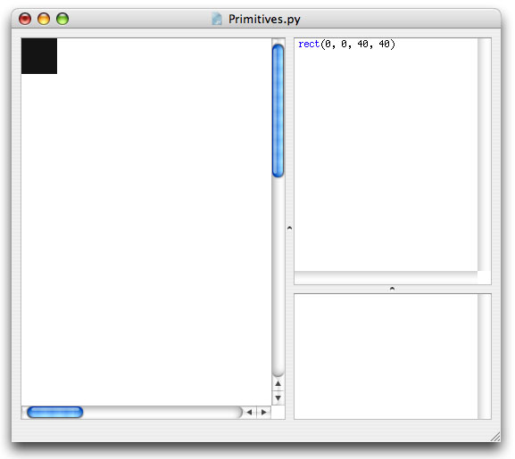

The drawing primitives are the basic shapes available in NodeBox: rectangles, ovals, lines, curves, text and images. It's a small set of programming commands that is easy to use and easy to understand which you can use to create visual output in NodeBox. The reference is all about the drawing primitives: each of the commands and their usage is discussed thoroughly there. The reference is something you'll want to keep close by when you start learning NodeBox. After a bit of experimenting you'll know all the drawing primitives by heart.
Syntax
Take a look at the rect() command for example. This command (logically) draws a rectangle in NodeBox. You'll see a description of it's syntax, in other words, how exaclty you need to write down the command in NodeBox for it to work.
In case of the rect() command the syntax is:
rect(x, y, width, height, roundness=0.0, draw=True)
All commands in NodeBox look like this: you have the name of the command (rect for example) which gives you a hint of what the command will do, and some stuff between brackets. The stuff between brackets we call parameters.
Parameters
Now rectangle could mean a lot of things. Imagine a rectangle with an equal width and height, this would be a square. We could have a square() command in NodeBox. Imagine you would like a small rectangle at the bottom of the canvas... we could have a smallbottomrect() command... we could define an infinite number of commands for rectangles in all sizes and flavors!
Instead of defining a tangle of commands, there is a single rect() command with parameters. Parameters are things you can customize. You can supply numbers, variables, strings and other things as parameters to a command to have it look exactly the way you want it to.
For example, to draw a square in the top left of the canvas:
rect(0, 0, 40, 40)
Notice how we replaced the x, y, width and height from the syntax description with real numbers. These number parameters describe how our rectangle will look: it is positioned in the top left (x is 0 and y is 0) and has an equal width and height of 40.

Optional parameters
You'll notice some other parameters in the rect() syntax which we didn't define, the roundness=0.0 for example. If a parameter description has an =something next to it, this means it is optional. If we don't define this parameter in our script, it's default value is something. In case of the rectangle command, the corner roundness is 0 by default, unless we explicitly say:
rect(0, 0, 40, 40, roundness=0.5)
Now we have a rectangle with 50% round corners.

Throttle
The reference describes what kind of values you can use for each parameter in each command. If these are numbers, you can use the throttle to quickly change them, as described in the environment tutorial. This is an easy way to play around with number parameters.
Defining your own commands
It's not that difficult to create your own commands in NodeBox, in the templating tutorial you'll see an example of how to create your own flower() command for example.